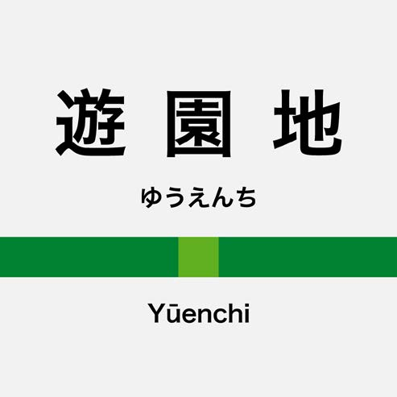
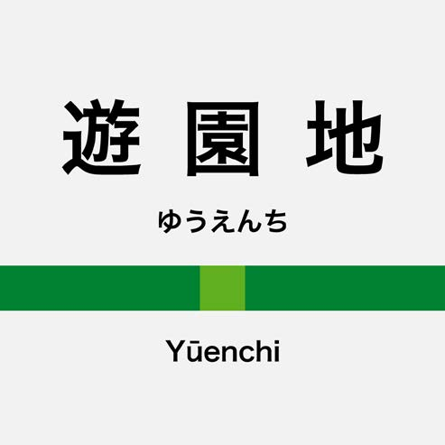

張行天者，通稱哭仨，北京人也。業軟體工程師，自謂獨立開發者，好藝術及設計也。
其色玫瑰。
會諸啁啾會館，剎那圖鑑，或致電函。
哭仨業於豆瓣，任產品工程師，開發後端以皮同。
哭仨嘗事蘋果開發，設計創新軟體，纂以迅語。一曰《粉丸》，隨機作詩器也；一曰《安可》，作樂以會友之平台也。
複刻《粉丸》以網頁，請試於此。
哭仨多作新詩，好數字藝術，喜圖形設計。自印詩集數冊，形制不一。今作《詩引》，言詩以程式語也。
至於設計，嘗作徽予其學院，亦作以遺友。
另作白話文章小說於微信。其《出謎人》錄於機核。


 
